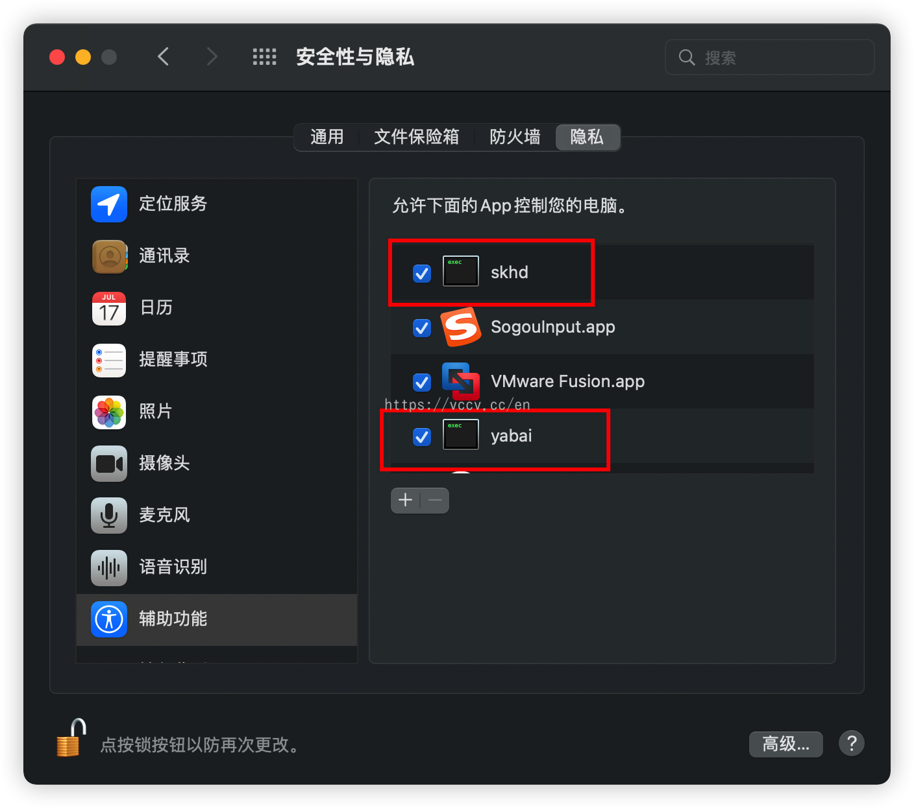
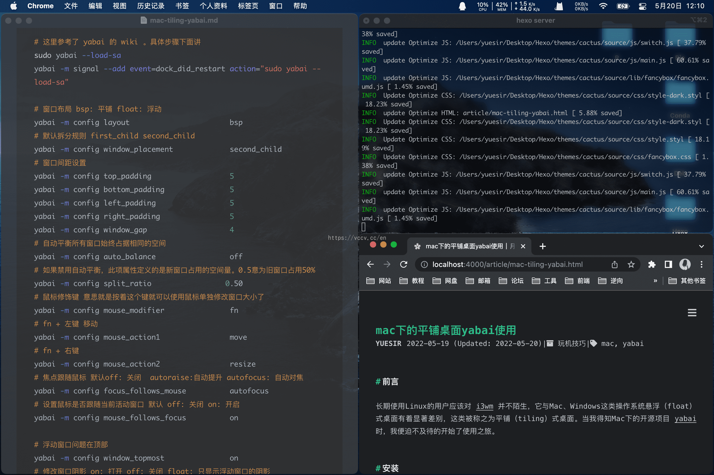

Preface Long-time Linux users should be familiar with i3wm , which is significantly different from the floating (float) desktops of Mac and Windows operating systems, which are called tiling desktops. When I learned about the open source project yabai for Mac, I couldn’t wait to start using it.
Installation Equipment status:
Homebrew is installed (You can refer to the official website)
Closed SIP
Monterey12.4
It is best to refer to Official Documents for installation, after all, the official one is the latest and most accurate.
The following is a record of your own process, which is available for your reference.
1 2 3 4 5 6 7 8 9 10 11 12 13 14 15 16 17 18 19 20 brew install koekeishiya/formulae/yabai sudo yabai --install-sa brew services start yabai brew install koekeishiya/formulae/skhd brew services start skhd sudo yabai --load-sa sudo visudo -f /private/etc/sudoers.d/yabai <user> ALL = (root) NOPASSWD: /usr/local/bin/yabai --load-sa sudo yabai --load-sa yabai -m signal --add event=dock_did_restart action="sudo yabai --load-sa"
yabai can be used with skhd , the option Secure Keyboard Entry must be disabled (off by default).
After the system starts yabai and skhd for the first time, macOS will prompt for permission to access the secondary functions. After adding permissions to System Preferences->Installability and Privacy->Privacy , execute the following command.

1 2 3 brew services restart yabai brew services restart skhd
This is still not working properly, and you still need to configure the relevant files yourself.
Configuration 1 2 3 4 5 6 touch ~/.yabaircchmod +x ~/.yabairctouch ~/.skhdrcchmod +x ~/.skhdrc
1 2 3 4 5 6 7 8 9 10 11 12 13 14 15 16 17 18 19 20 21 22 23 24 25 26 27 28 29 30 31 32 33 34 35 36 37 38 39 40 41 42 43 44 45 46 47 48 49 50 51 52 53 54 55 #!/usr/bin/env sh sudo yabai --load-sa yabai -m signal --add event=dock_did_restart action="sudo yabai --load-sa" yabai -m config layout bsp yabai -m config window_placement second_child yabai -m config top_padding 5 yabai -m config bottom_padding 5 yabai -m config left_padding 5 yabai -m config right_padding 5 yabai -m config window_gap 4 yabai -m config auto_balance off yabai -m config split_ratio 0.50 yabai -m config mouse_modifier fn yabai -m config mouse_action1 move yabai -m config mouse_action2 resize yabai -m config focus_follows_mouse autofocus yabai -m config mouse_follows_focus on yabai -m config window_topmost on yabai -m config window_shadow float yabai -m config window_opacity on yabai -m config active_window_opacity 1.0 yabai -m config normal_window_opacity 0.9 yabai -m config window_opacity_duration 0.0 yabai -m config external_bar all:0:5 yabai -m rule --add app="^系统偏好设置$" manage=off yabai -m rule --add app="^提醒事项$" manage=off yabai -m rule --add app="^关于本机$" manage=off echo "yabai configuration loaded.."
.skhdrc Example： 1 2 3 4 5 6 7 8 9 10 11 12 13 14 15 16 17 18 19 20 21 22 23 24 25 26 27 28 29 30 31 32 33 34 35 36 37 38 39 40 41 42 43 44 45 46 47 48 49 50 51 52 53 54 55 56 57 58 59 60 61 62 63 64 65 66 67 68 69 70 71 72 73 74 75 76 77 78 79 80 81 82 83 84 85 86 87 88 89 90 91 92 93 94 95 96 97 98 99 100 101 102 103 104 105 106 107 108 109 110 111 112 113 114 115 116 117 118 119 120 121 122 123 124 125 126 127 128 129 130 131 132 133 134 135 136 137 138 139 alt - h : yabai -m window --focus west alt - j : yabai -m window --focus south alt - k : yabai -m window --focus north alt - l : yabai -m window --focus east shift + alt - h : yabai -m window --swap westshift + alt - j : yabai -m window --swap southshift + alt - k : yabai -m window --swap northshift + alt - l : yabai -m window --swap eastshift + cmd - h : yabai -m window --warp westshift + cmd - j : yabai -m window --warp southshift + cmd - l : yabai -m window --warp eastctrl + alt - 0 : yabai -m space --balance ctrl + alt - return : yabai -m window --grid 1:1:0:0:1:1 ctrl + alt - up : yabai -m window --grid 2:1:0:0:2:1 ctrl + alt - left : yabai -m window --grid 1:2:0:0:1:1 ctrl + alt - right : yabai -m window --grid 1:2:1:1:1:1 ctrl + alt - down : yabai -m window --grid 2:1:0:1:2:1 ctrl + alt - u : yabai -m window --grid 2:2:0:0:1:1 ctrl + alt - i : yabai -m window --grid 2:2:0:1:1:1 ctrl + alt - j : yabai -m window --grid 2:2:1:0:1:1 ctrl + alt - k : yabai -m window --grid 2:2:1:1:1:1 ctrl + alt - d : yabai -m window --grid 1:3:0:0:1:1 ctrl + alt - e : yabai -m window --grid 1:3:0:0:2:1 ctrl + alt - f : yabai -m window --grid 1:3:1:0:1:1 ctrl + alt - t : yabai -m window --grid 1:3:1:0:2:1 ctrl + alt - g : yabai -m window --grid 1:3:3:0:1:1 ctrl + alt - c : yabai -m window --grid 3:3:1:1:1:1 alt - t : yabai -m window --toggle float ;yabai -m window --grid 4:4:1:1:2:2 alt - r : yabai -m space --rotate 90 ctrl + alt + cmd - left : yabai -m window --resize left:-50:0; yabai -m window --resize right:-50:0 ctrl + alt + cmd - down : yabai -m window --resize bottom:0:50; yabai -m window --resize top:0:50 ctrl + alt + cmd - up : yabai -m window --resize top:0:-50; yabai -m window --resize bottom:0:-50 ctrl + alt + cmd - right : yabai -m window --resize right:50:0; yabai -m window --resize left:50:0 cmd + alt - r : /usr/bin/env osascript <<< "display notification \"正在重启 Yabai\" with title \"Yabai\"" ; launchctl kickstart -k "gui/${UID} /homebrew.mxcl.yabai" shift + cmd - n : yabai -m space --create && index="$(yabai -m query --spaces --display | jq '.| length') " && yabai -m window --space "${index} " && yabai -m space --focus "${index} " alt - x : yabai -m space --focus recent alt - 1 : yabai -m space --focus 1 alt - 2 : yabai -m space --focus 2 alt - 3 : yabai -m space --focus 3 alt - 4 : yabai -m space --focus 4 alt - 5 : yabai -m space --focus 5 alt - 6 : yabai -m space --focus 6 alt - 7 : yabai -m space --focus 7 alt - 8 : yabai -m space --focus 8 alt - 9 : yabai -m space --focus 9 cmd + alt - w : yabai -m space --destroy shift + cmd - z : yabai -m window --space next; yabai -m space --focus nextshift + cmd - 1 : yabai -m window --space 1; yabai -m space --focus 1shift + cmd - 2 : yabai -m window --space 2; yabai -m space --focus 2shift + cmd - 3 : yabai -m window --space 3; yabai -m space --focus 3shift + cmd - 4 : yabai -m window --space 4; yabai -m space --focus 4shift + cmd - 5 : yabai -m window --space 5; yabai -m space --focus 5shift + cmd - 6 : yabai -m window --space 6; yabai -m space --focus 6shift + cmd - 7 : yabai -m window --space 7; yabai -m space --focus 7shift + cmd - 8 : yabai -m window --space 8; yabai -m space --focus 8shift + cmd - 9 : yabai -m window --space 9; yabai -m space --focus 9cmd - return : open -a iTerm
Use After using it for a few days, I found that skhd’s shortcuts often conflict with application or system shortcuts, which is a bit troublesome.
In addition, there are more shortcut keys, you need to use more to remember familiar, I use it again for a period of time to see the situation first.
The effect would be something like the following:

Looked almost well, just haven’t played around with it, efficiency didn’t improve much, unfortunately.
Thanks yabai Open Source Project
skhd Open Source Project
Toretto